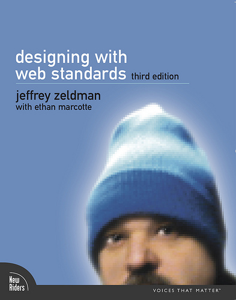

Hello there!
Today I went to see the movie Big Fish and it was awesome!
En presentation av Julia Sivartsson
Vad INNEBÄR det? Hur ANVÄNDER jag det? Vilka FÖRDELAR har det?
semantic.gs - inkludera filen för färdiga definitioner.
“Form ever follows function. This is the law.”
- Louis Sullivan
Framework för att strukturea upp layouten. Kompatibelt med moderna webbläsare och även responsivt!
Dålig "semantic markup"
//HTML
Hello there!
Today I went to see the movie
Big Fish and it was awesome!
//HTML
Hello there!
Today I went to see the movie
Big Fish and it was awesome!
Amerikan bosatt i London. Var med och startade upp Twigkit. 'Designing the Search Experience'
Framgånsrik entreprenör, webbdesigner, författare, föreläsare m.m. Co-host 'the Big Web Show' samt var med och startade up 'A List Apart'. Förespråkare för semantisk uppbyggnad av webbplatser -rekommenderar 'designing with web standars.'

Med enkla ord kan man säga att LESS "förlänger" CSS, det gör det t.ex. enklare att återanvända kod genom att variabler finns till ditt förfogande.
Här nedan ser du ett sätt att använda variabler i LESS.
// LESS
@color: #FFC0CB;
#header
{
color: @color;
}
/* Compiled CSS */
#header
{
color: #FFC0CB;
}
Ett annat smidigt sätt att använda LESS är för att göra uträkningar.
// Declare variable
@padding: 5px;
// Here we want a padding that is twice as much as we declared the variable above
#header
{
padding: @padding * 2; // This will result in a padding that is 10px
}
Strukturerad kod
Sökoptimering
Bättre precision
LESS
Responsivt